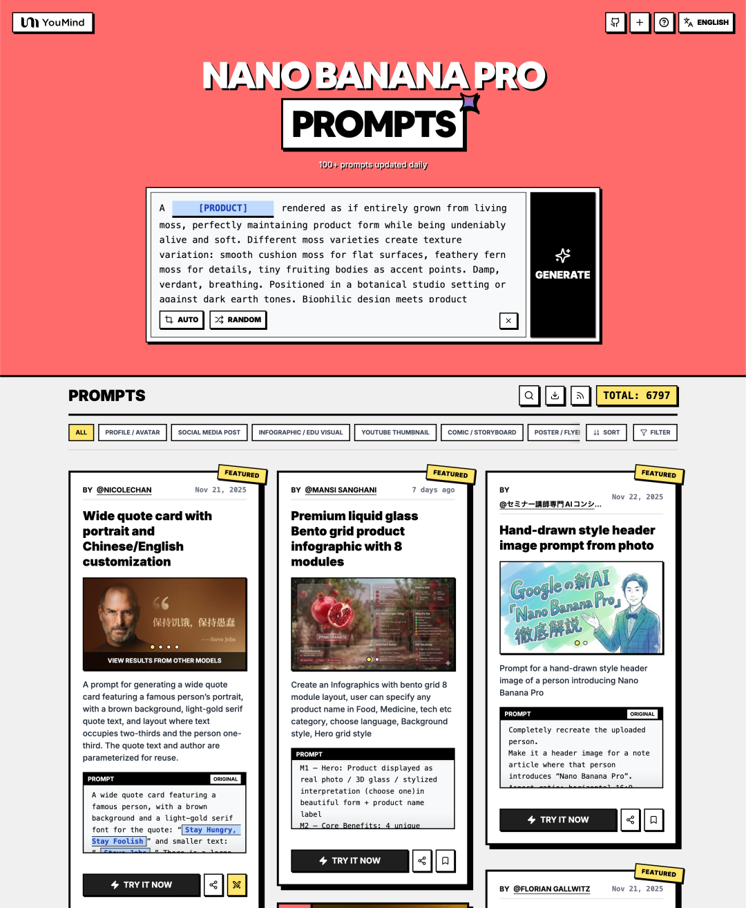

一个仓库收了 1.1 万条 AI 提示词：这份 Nano Banana Pro 提示词库，太适合内容创作者了
如果你经常用图像生成模型，大概率遇到过这件事：
不是模型不够强，而是你不知道该从哪条提示词开始。
这也是为什么我最近看到这个 GitHub 仓库时，第一反应是：它很适合被中文内容创作者收藏。
仓库地址：
awesome-nano-banana-pro-prompts
这是一个围绕 Google Nano Banana Pro 整理的超大型 Prompt 资料库。根据 README 中展示的统计数据，提示词数量已经达到 11,946 条，而且还在持续更新。

这个仓库到底是什么？
从 README 来看，它不是一个单纯“堆 Prompt 文本”的仓库，而是一个结构化的提示词资料库，包含：
- Prompt 描述
- Prompt 原文
- 配套示例图
- 作者信息
- 来源链接
- 分类浏览
- 多语言 README
- 网页画廊入口
简单说，它更像一个 可检索、可学习、可直接复制使用的创意 Prompt 数据库。
README 里还给了 youmind.com 的网页画廊入口，方便按视觉方式浏览，而不只是对着 GitHub 长文档翻找。
它解决了什么问题？
很多人用 AI 做图时，最大的问题不是“不会点生成”，而是：
- 没灵感
- 不知道 Prompt 怎么组织
- 不知道别人是怎么约束画面细节的
- 不知道哪些模板适合信息图、头像、海报或知识卡片
- 看到效果图，却不知道背后的提示词结构
这个仓库的价值就在于，它把社区中大量已经跑通过、效果比较成熟的 Prompt 收集起来，降低了试错门槛。
它适合什么人？
如果你属于下面这些角色，这个仓库会非常有用：
- 公众号、小红书、视频号等平台的内容创作者
- 需要封面图、海报图、知识卡片的人
- 运营、设计、品牌、增长岗位从业者
- 想学习高质量 Prompt 写法的人
- 需要多语言、多风格样例的 AI 应用探索者
它最值得收藏的四个亮点
1. 数量足够大
11,946 条 Prompt，本身就是一个很强的“灵感池”。
对内容工作来说，这意味着你不必从零开始，而是可以先找一个接近的模板，再往自己目标上微调。
2. 不只是给你一段文字，还给你结果参照
很多 Prompt 仓库只有一句话，而这个仓库通常会同时给出：
- 文字说明
- Prompt 正文
- 示例图片
- 作者与来源
这就让它不仅能“拿来用”，还能“拿来学”。
3. 分类清晰
README 里可以按多个维度浏览，比如：
- Use Cases：头像、社媒图、信息图、海报、产品营销图
- Style：摄影、电影感、动漫、插画、水彩、赛博朋克、极简风等
- Subjects：人物、情侣、产品、食物、建筑、自然、城市等
4. 多语言友好
README 提供多语言版本，对中文用户尤其友好。即使原 Prompt 是英文，你也更容易看懂它的用途和结构。
怎么快速上手？
如果你第一次接触这个仓库，我建议别一头扎进那上万条 Prompt 里，而是按下面顺序：
第一步：先看 Featured Prompts
README 的 Featured Prompts 一般更适合当入门案例，因为结构清晰、质量更稳定、展示也更完整。
第二步：先选场景，不要先选词
比如你先明确自己现在要的是：
- 公众号封面图
- 海报图
- 信息图
- 头像图
- 风格化实验图
有了场景，再去找对应 Prompt，效率会高很多。
第三步：每次只改 2-3 个变量
不要一上来把主题、风格、画幅、镜头、角色、灯光全改掉。最稳的方式是：
- 先保留原 Prompt 主结构
- 只替换主题词
- 再改语言或比例
- 最后再微调风格
第四步：建立自己的模板库
真正好用的 Prompt，不是你一次生成出来，而是你不断复用、不断缩短修改路径后沉淀下来的版本。
使用这类仓库时，有哪些注意事项？
1. README 有版权提示
仓库明确写了，所有 Prompt 都是从社区收集而来，主要用于教育目的。如果你准备用于商业发布、课程、产品化场景，建议复核来源和授权边界。
2. 示例图很强，不代表你能原样复现
是否上传参考图、模型版本、平台实现、参数处理方式，都会影响结果。所以最好的思路不是“复制粘贴求复现”，而是“拿结构、拿思路、拿约束方式”。
3. 超长 Prompt 不一定适合所有人
有些高质量 Prompt 会写得极其细致，但这并不代表你每次都必须照搬。对日常内容生产来说，能稳定复用的模板，比一次性的复杂 Prompt 更有价值。
5 个可直接复制使用的提示词/用例
下面整理了 5 个我认为最适合内容创作者直接上手的用例。为方便公众号阅读，我保留原意，并加上中文说明。
用例 1：名人语录横版卡片
适合：知识号头图、人物语录图、社交平台金句卡
```text
A wide quote card featuring a famous person, with a brown background and a light-gold serif font for the quote: “{argument name="famous_quote" default="Stay Hungry, Stay Foolish"}” and smaller text: “—{argument name="author" default="Steve Jobs"}.” There is a large, subtle quotation mark before the text. The portrait of the person is on the left, the text on the right. The text occupies two-thirds of the image and the portrait one-third, with a slight gradient transition effect on the portrait.
```
中文注释：把引号里的内容替换成你的文案和作者名，就能快速得到一张比较成熟的语录卡。
来源定位：README → Featured Prompts → “Wide quote card with portrait and Chinese/English customization”
来源链接：<https://youmind.com/en-US/nano-banana-pro-prompts?id=151>
用例 2：8 宫格液态玻璃产品信息图
适合：产品介绍图、品牌图、科普型信息图
```text
Input Variable: [insert product name]
Language: [insert language]
System Instruction:
Create an image of premium liquid glass Bento grid product infographic with 8 modules.
1) Product Analysis
2) Color Palette
3) Visual Style
4) Module Content (8 Cards)
Output: 1 image, 16:9 landscape, ultra-premium liquid glass infographic.
```
中文注释：这是一个很强的信息组织模板，特别适合把复杂产品说明压成一张易传播的视觉图。
来源定位：README → Featured Prompts → “Premium liquid glass Bento grid product infographic with 8 modules”
来源链接：<https://youmind.com/en-US/nano-banana-pro-prompts?id=6847>
用例 3：黑板风新闻总结图
适合：AI 周报、资讯拆解、知识可视化
```text
Using the following content, summarize the news in a chalkboard-style, hand‑written look, and break it down with diagrams and easy‑to‑understand expressions as if a teacher had written it.
—-
Search results from Grok
```
中文注释：把分隔线下面的内容替换成你的文章或资料，能快速得到“老师板书”风格的知识图。
来源定位：README → Featured Prompts → “Chalkboard-style AI news summary”
来源链接：<https://youmind.com/en-US/nano-banana-pro-prompts?id=509>
用例 4：蓝调御宅风镜像自拍场景
适合：人物设定、视觉风格实验、氛围感内容图
```text
Scene
Mirror selfie in an otaku-style computer corner, blue color tone.
Subject
* Gender expression: female
* Age: around 25
* Ethnicity: East Asian
Environment
* Description: bedroom computer corner seen through a wall-mounted mirror
* Replace all pink elements with blue tones.
Negative prompts
* Any appearance of pink/magenta anywhere
* Beauty filters/over-smoothed skin
* Exaggerated or distorted anatomy
```
中文注释：它的精华不是“自拍”，而是展示了如何同时控制人物、环境、镜头和负面约束。
来源定位：README → Featured Prompts → “Detailed mirror-selfie otaku room scene”
来源链接：<https://youmind.com/en-US/nano-banana-pro-prompts?id=553>
用例 5：把现代场景改写成浮世绘
适合：文化混搭海报、风格化插图、创意视觉实验
```text
A Japanese Edo-period Ukiyo-e woodblock print. The overall feeling is a surreal collaboration between masters like Hokusai and Hiroshige, reimagining modern technology through an ancient lens.
The scene: {argument name="modern scene" default="a busy Shibuya scramble crossing"}
The image must look like a physical print, not a digital painting.
* Texture: strong visible wood grain texture and rough paper fibers throughout the piece.
* Color palette: strictly limited to traditional mineral pigments.
* Lighting: soft, flat, shadow-free lighting with no digital gradients.
```
中文注释：把 modern scene 替换成“直播间”“AI 办公室”“地铁通勤”等现代主题，会得到很有辨识度的结果。
来源定位：README → Featured Prompts → “Edo-period Ukiyo-e reinterpretation of a modern scene”
来源链接：<https://youmind.com/en-US/nano-banana-pro-prompts?id=811>
这类仓库最正确的打开方式是什么？
不是“疯狂收藏”，而是“立刻试 3 条”。
如果我是内容创作者，我会今天就做这件事：
1. 从 Featured Prompts 里选 3 条
2. 分别生成一张头图、一张信息图、一张风格海报
3. 把效果最好的那条 Prompt 记进自己的模板库
这样你很快就会从“看别人会用 Prompt”，进入“我自己有稳定模板”的状态。
小结
如果你想找一个高密度、可复用、可直接上手的 Prompt 资料库，这个仓库很值得收藏。
它的价值不只是“多”，而是：
- 有结构
- 有示例
- 有来源
- 有分类
- 有学习价值
对中文内容创作者来说，它尤其适合作为：
- 头图灵感库
- 海报模板库
- 信息图参考库
- Prompt 学习样本库
仓库链接放这里，建议直接收藏：
<https://github.com/YouMind-OpenLab/awesome-nano-banana-pro-prompts>